Workshop Manual ➭ GENERAL INFORMATION ➭ GENERAL INFORMATION ➭ SERVICE CAUTIONS
SERVICE CAUTIONS
id000000000200
{: #wp1059776}
Injury/damage Prevention Precautions
• Depending on the vehicle, the cooling fan may operate suddenly even when the ignition switch is turned off. Therefore, keep hands and tools away from the cooling fan even if the cooling fan is not operating to prevent injury to personnel or damage to the cooling fan. Always disconnect the negative battery cable when servicing the cooling fan or parts near the cooling fan.
Protection of the Vehicle
• Always be sure to cover fenders, seats and floor areas before starting work.{: #wp1059812}
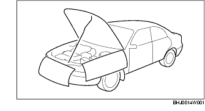
Preparation of Tools and Measuring Equipment
• Be sure that all necessary tools and measuring equipment are available before starting any work.{: #wp1059853}
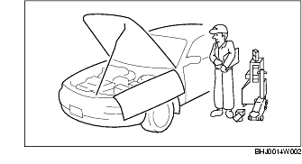
Special Service Tools
• Use special service tools or the equivalent when they are required.{: #wp1059894}
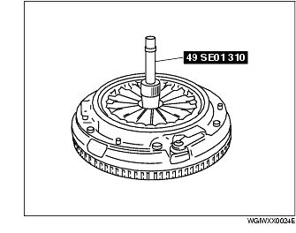
Malfunction Diagnosis System
• Use the Mazda modular diagnostic system (M-MDS) or equivalent for malfunction diagnosis.
Disconnection of the Negative Battery Cable
• When working with the negative battery cable disconnected, wait for 1 min or more to allow the back up power supply of the SAS control module to deplete its stored power after the cable is disconnected.
• Disconnecting the battery cable will delete the memories of the clock, audio, and DTCs, etc. Therefore, it is necessary to note down the information stored in those memories before disconnecting the cable.
Warning
• When the negative battery cable is disconnected, the initialization setting of the steering angle sensor is cleared. Therefore, perform the initialization procedure after connecting the negative battery cable. {: #wp1064374}(See STEERING ANGLE SENSOR INITIALIZATION PROCEDURE.)
Oil Leakage Inspection
• Use either of the following procedures to identify the type of oil that is leaking:
Using UV light (black light)
- Remove any oil on the engine or transaxle/transmission.
*Note*{: #wp1060062}
• Referring to the fluorescent dye instruction manual, mix the specified amount of dye into the engine oil or ATF (or transaxle/transmission oil).
-
Pour the fluorescent dye into the engine oil or ATF (or transaxle/transmission oil).
-
Allow the engine to run for 30 min.
-
Inspect for dye leakage by irradiating with UV light (black light), and identify the type of oil that is leaking.
-
If no dye leakage is found, allow the engine to run for another 30 min. or drive the vehicle then reinspect.
-
Find where the oil is leaking from, then make necessary repairs.
*Note*{: #wp1060134}
• To determine whether it is necessary to replace the oil after adding the fluorescent dye, refer to the fluorescent dye instruction manual.
Not using UV light (black light)
-
Gather some of the leaking oil using an absorbent white tissue.
-
Take samples of engine oil and ATF (or transaxle/transmission oil), both from the dipstick, and place them next to the leaked oil already on the tissue.
-
Compare the appearance and smell, and identify the type of oil that is leaking.{: #wp1060184}
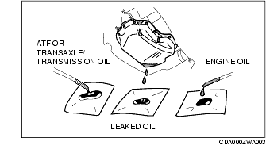
-
Remove any oil on the engine or transaxle/transmission.
-
Allow the engine to run for 30 min.
-
Check the area where the oil is leaking, then make necessary repairs.
Removal of Parts
• While correcting a problem, also try to determine its cause. Begin work only after first learning which parts and sub-components must be removed and disassembled for replacement or repair. After removing the part, plug all holes and ports to prevent foreign material from entering.{: #wp1060253}
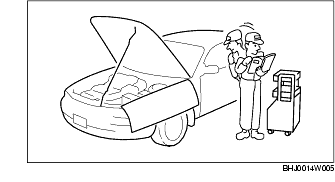
Disassembly
• If the disassembly procedure is complex, requiring many parts to be disassembled, all parts should be marked in a place that will not affect their performance or external appearance, and identified so that reassembly can be performed easily and efficiently.{: #wp1060295}
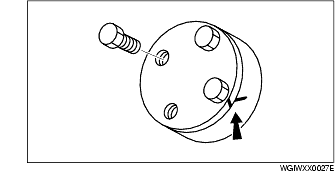
Inspection During Removal, Disassembly
• When removed, each part should be carefully inspected for malfunction, deformation, damage and other problems.{: #wp1060336}
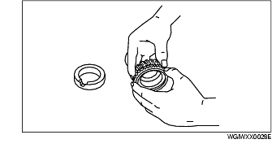
Arrangement of Parts
• All disassembled parts should be carefully arranged for reassembly.{: #wp1060377}
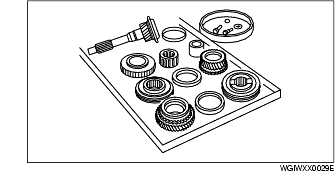
• Be sure to separate or otherwise identify the parts to be replaced from those that will be reused.
Cleaning of Parts
• All parts to be reused should be carefully and thoroughly cleaned in the appropriate method.{: #wp1060428}
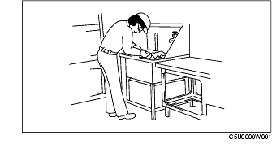
Warning
• Using compressed air can cause dirt and other particles to fly out causing injury to the eyes. Wear protective eye wear whenever using compressed air.
Reassembly
• Standard values, such as torques and certain adjustments, must be strictly observed in the reassembly of all parts.{: #wp1060497}
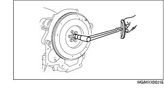
• If removed, these parts should be replaced with new ones:
- Oil seals {: #wp1060538}- Gaskets {: #wp1060552}- O-rings {: #wp1060562}- Lock washers {: #wp1060574}- Cotter pins {: #wp1060584}- Nylon nuts
• Depending on location:{: #wp1060604}
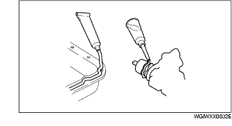
- Sealant and gaskets, or both, should be applied to specified locations. When sealant is applied, parts should be installed before sealant hardens to prevent leakage. {: #wp1060631}- Oil should be applied to the moving components of parts. {: #wp1060645}- Specified oil or grease should be applied at the prescribed locations (such as oil seals) before reassembly.
Adjustment
• Use suitable gauges and testers when making adjustments.{: #wp1060675}
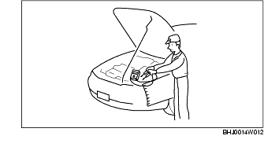
Rubber Parts and Tubing
• Prevent gasoline or oil from getting on rubber parts or tubing.{: #wp1060716}
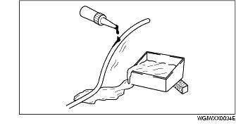
Hose Clamps
• When reinstalling, position the hose clamp in the original location on the hose and squeeze the clamp lightly with large pliers to ensure a good fit.{: #wp1060757}
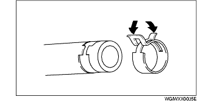
Torque Formulas
• When using a torque wrench-SST or equivalent combination, the specified torque must be recalculated due to the extra length that the SST or equivalent adds to the torque wrench. Recalculate the torque by using the following formulas. Choose the formula that applies to you.{: #wp1060823}
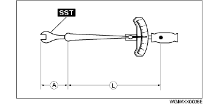
|
Formula {: #wp1060912} |
|
|---|---|
|
N·m {: #wp1060852} |
N·m × [L/(L+A)] {: #wp1060854} |
|
kgf·m {: #wp1060927} |
kgf·m × [L/(L+A)] {: #wp1060930} |
|
kgf·cm {: #wp1060934} |
kgf·cm × [L/(L+A)] {: #wp1060937} |
|
ft·lbf {: #wp1061008} |
ft·lbf × [L/(L+A)] {: #wp1061011} |
|
in·lbf {: #wp1061034} |
in·lbf × [L/(L+A)] {: #wp1061037} |
A : {: #wp1061062} The length of the SST{: #wp1061075} past the torque wrench drive. L : {: #wp1061093} The length of the torque wrench.
Vise
• When using a vise, put protective plates in the jaws of the vise to prevent damage to parts.{: #wp1061118}
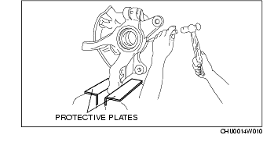
Dynamometer
• When inspecting and servicing the power train on the dynamometer or speedometer tester, pay attention to the following:
- Place a fan, preferably a vehicle-speed proportional type, in front of the vehicle. {: #wp1061173}- Make sure the vehicle is in a facility with an exhaust gas ventilation system. {: #wp1061189}- Since the rear bumper might deform from the heat, cool the rear with a fan. (Surface of the bumper must be below 70°C {158°F} degrees.) {: #wp1061199}- Keep the area around the vehicle uncluttered so that heat does not build up. {: #wp1061230}- Watch the water temperature gauge and do not overheat the engine. {: #wp1061240}- Avoid added load to the engine and maintain normal driving conditions as much as possible.
*Note*{: #wp1061260}
• When only the front or rear wheels are rotated on a chassis dynamometer or equivalent, the ABS/DSC CM determines that there is a malfunction in the ABS/DSC and illuminates the following lights:
- Vehicles with ABS
• ABS warning light {: #wp1061296}• Brake system warning light
- Vehicles with DSC
• ABS warning light {: #wp1061330}• Brake system warning light {: #wp1061344}• DSC indicator light
• If the above lights are illuminated, dismount the vehicle from the chassis dynamometer and turn the ignition switch to the LOCK position. Then, turn the ignition switch back to the ON position, run the vehicle at 10 km/h or more and verify that the warning lights go out. In this case, a DTC will be stored in the memory. Clear the DTC from the memory by following the memory clearing procedure [ABS]/[DSC] in the on-board diagnostic system. (See ON-BOARD DIAGNOSIS [ABS].), (See ON-BOARD DIAGNOSIS [DYNAMIC STABILITY CONTROL].)
SST
• Some global SST or equivalent are used as SSTs necessary for engine repair. Note that these SSTs are marked with global SST numbers.
• Note that a global SST number is written together with a corresponding Mazda SST number as shown below.
Example (Section **-60)
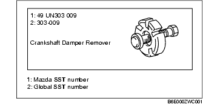
Example (Except section **-60)
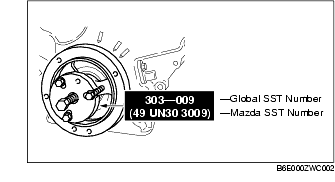